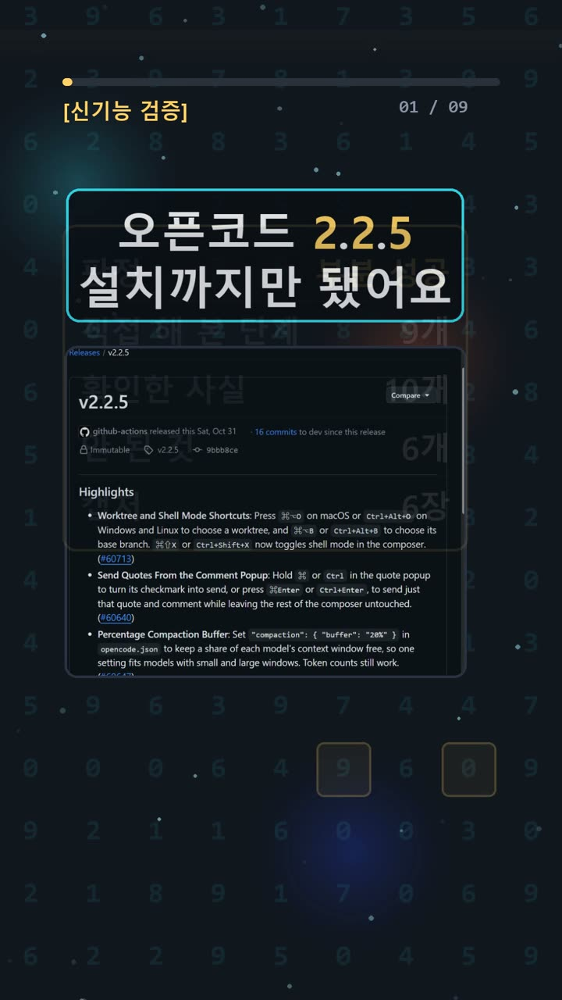
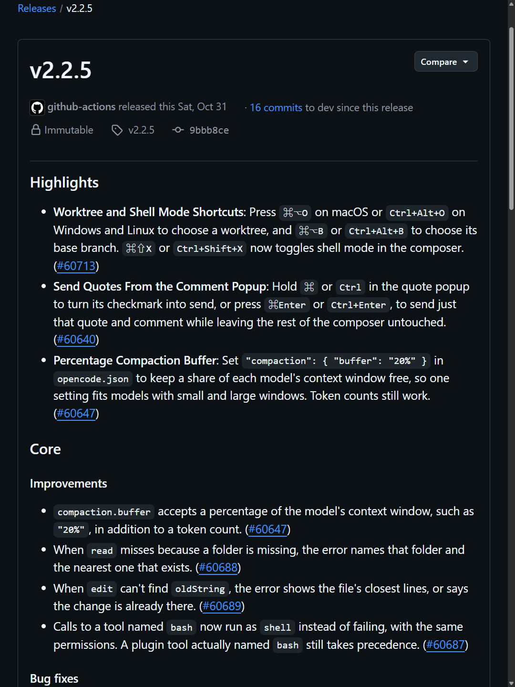
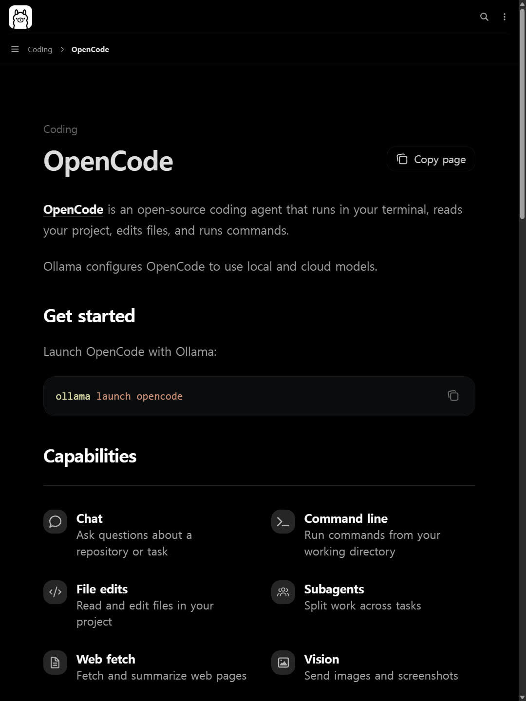
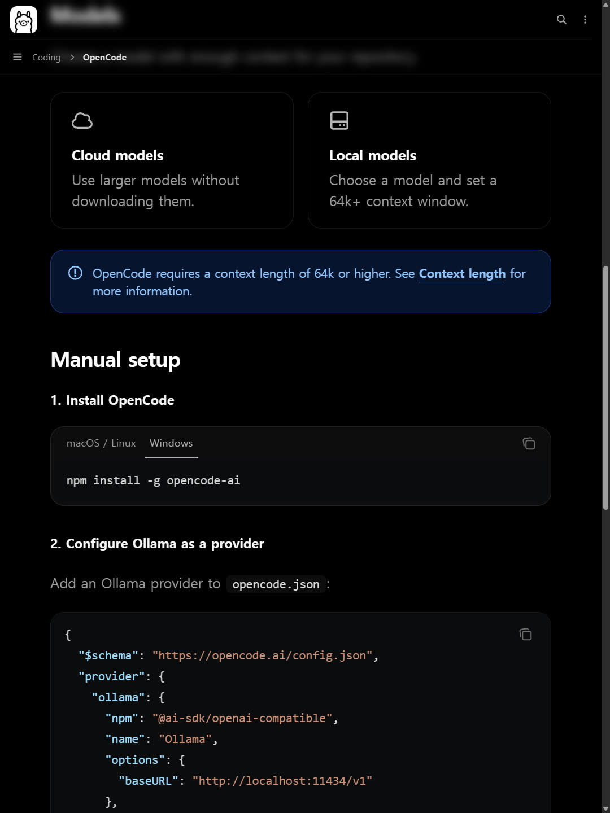

이 포스팅은 쿠팡 파트너스 및 토스쇼핑 쉐어링크 활동의 일환으로, 이에 따른 일정액의 수수료를 제공받습니다.
OpenCode 2.2.5 윈도우 설치는 성공, 로컬 AI 코딩은 아직 검증 전

검증 범위 · 직접 확인 기록 · 이 글은 2026-10-31에 공식 출처를 열어 보고 우리 PC에서 직접 확인한 기록(확인 수준: partial)을 바탕으로 AI 도구와 함께 정리했습니다.
따라 할 명령어 바로 보기 (무료 공개)명령어·설정·실패 해결표
| 구분 | 내용 | 해결 |
|---|---|---|
| 명령어 | npm install -g | |
| 명령어 | npm install -g opencode-ai | |
| 실패 해결 | OpenCode v2의 Ollama 모델 목록이 비어 있다. | 공식 Providers의 Errors: Ollama has no models 항목에 따라 baseURL에서 유도한 경로에 /api/tags와 /api/show가 노출되는지, /api/show가 completion capability를 보고하는지 확인한다. embedding-only 모델은 목록에 나오지 않는다. 기본 탐지 주소는 http://127.0.0.1:11434다. |
| 실패 해결 | OpenCode v2에 No model is available for session ... 또는 Model unavailable: provider/model 오류가 나온다. | 공식 Providers의 Errors에 따라 제공자 준비를 완료하고 /models에서 모델을 선택한다. 모델이 활성화되어 있는지, 모델 ID가 존재하는지, 제공자가 활성 상태인지 또는 동적 탐지 목록에 남아 있는지 확인한다. 모델 ID를 추측해 입력하지 않는다. |
한눈에 보기
- OpenCode v2.2.5 윈도우 독립 CLI(명령어로 쓰는 프로그램)를 받았어요. 공식 해시와 일치했고
--version,--help실행에 성공했어요. - Ollama 로컬 모델 연결, 인터넷을 끈 상태의 AI 코드 수정, 테스트 통과는 하지 못했어요. 원래 기획한 "인터넷 끊고 PC 안 AI가 코딩"은 이번에 증명하지 못했어요.
- 확인 수준은 partial(일부만 확인)이에요. 그래서 처음 정한 제목도 고쳤어요.
원래 계획은 와이파이를 끄고 내 PC 안의 AI에게 버그를 고치게 하는 것이었어요. 실제로 해 보니 설치 확인 단계에서 멈췄어요. 어디까지 됐고 어디서 막혔는지 순서대로 적을게요.
시작 전에 확인할 것
- 요금
- OpenCode는 오픈소스예요(누구나 코드를 볼 수 있는 프로그램). 라이선스는 MIT예요.
- 이번에 한 버전 확인·도움말 실행은 계정, 개인 API 키(외부 AI 서비스 이용 열쇠), 결제, 가입 없이 됐어요.
- OpenCode Go는 선택형 월 10달러 구독이에요. OpenCode 설치와는 별개예요. 이번에는 쓰지 않았어요.
- 클라우드 모델과 Go를 고르지 않고 로컬 모델만 쓰면 API 사용료가 들지 않는다는 게 공식 문서 설명이에요. 전기요금, 장비 비용, 모델별 라이선스와 성능은 따로 따져야 해요.
- 운영체제(OS)
- OpenCode 데스크톱 앱은 Windows x64/ARM64, macOS(Intel/Apple Silicon), Linux(deb/rpm/AppImage)를 지원해요.
- OpenCode v2 문서에는 "Windows package managers are not supported"라고 적혀 있어요. 윈도우용 패키지 관리자(설치 도우미 프로그램)는 지원하지 않는다는 뜻이에요.
- Ollama 윈도우 요구사항: Windows 10 22H2 이상(Home/Pro), 설치 공간 최소 4GB, 모델 저장 공간은 따로 필요해요.
- 로컬 AI에 필요한 것 📄 공식 문서 기준
- 미리 내려받은 모델과 로컬 Ollama API가 있어야 해요.
- OpenCode용 문맥 길이 64K 이상이 필요해요. 문맥 길이는 AI가 한 번에 기억하는 글의 양이에요.
- 모델이 쓰는 메모리(RAM/VRAM)는 모델과 설정마다 달라요. 우리는 측정하지 않았어요.
- 회사 코드 주의: "코드가 절대 밖으로 안 나간다"는 우리가 검증하지 않았어요. 플러그인(추가 기능), 웹 도구, 클라우드 모델 선택, 회사 보안 정책을 따로 확인하세요.
설치 방법
우리는 내 PC 설정을 건드리지 않으려고 격리 폴더(다른 곳과 섞이지 않게 따로 만든 시험용 폴더)에서 했어요.
1. 공식 ZIP 받기 ✅ 직접 해 봄
- v2.2.5 릴리스 페이지(새 버전 배포 페이지)에서
opencode-windows-x64.zip을 받아downloads폴더에 저장해요. - 성공하면: 파일 크기가 121,962,397바이트예요. 우리는 5.307초 걸렸어요.
- 막히면: 파일 목록(Assets)이 늦게 뜰 수 있어요. 우리는 목록을 접었다 펼친 뒤 링크가 보였어요.
2. 진짜 파일인지 확인하고 풀기 ✅ 직접 해 봄
Get-FileHash .\downloads\opencode-windows-x64.zip -Algorithm SHA256 Expand-Archive .\downloads\opencode-windows-x64.zip .\opencode
- 성공하면: 해시(파일 지문)가 공식 표시값
2f3bfd6b3527c60c2a882557b20ddc9ba6bdff4b5a8fe61c853da8fcfb3076e8과 같아요. 확인과 압축 풀기에 1.156초 걸렸어요. - 막히면: 값이 다르면 실행하지 말고 공식 페이지에서 다시 받으세요.
3. 버전과 도움말 실행 ✅ 직접 해 봄
.\opencode\opencode.exe --version .\opencode\opencode.exe --help
- 성공하면: 첫 줄에
opencode v2.2.5가 나오고 종료 코드 0이에요(0은 정상 종료라는 뜻). 버전 확인은 15.642초, 도움말은 0.150초 걸렸어요. 이 시간은 AI가 코드를 고친 시간이 아니에요. - 우리는 실행 전에 HOME, APPDATA, TEMP 같은 저장 위치를 격리 폴더 안으로 바꿔서 실행했어요. 전역 설치(PC 전체에 설치)나 관리자 권한은 필요 없었어요.
npm install -g(전역 설치 명령)와 데스크톱 EXE 설치는 이번에 쓰지 않았어요.

사용 방법
여기부터는 모두 공식 문서로만 확인한 단계예요. 직접 실행하지는 않았어요.
1. Ollama 설치와 모델 준비 📄 공식 문서 기준
- Ollama를 설치하고 모델을 미리 내려받아요.
- 주의: 일반 설치는 백그라운드 실행(눈에 안 보이게 계속 켜져 있음)과 PATH 변경(명령어 경로 등록)을 해요. 우리는 이 때문에 설치하지 않았어요.
2. OpenCode 연결 📄 공식 문서 기준
- Ollama 연동 문서는
ollama launch opencode명령을 안내해요. OpenCode가 프로젝트를 읽고, 파일을 고치고, 명령을 실행한다고 설명해요.
ollama launch opencode
- 이 명령은 Ollama가 이미 설치된 상태에서 쓰는 연동 명령이에요. v2.2.5와 자동으로 잘 연결된다는 걸 우리가 확인한 건 아니에요.
3. 문맥 길이 64K 이상으로 설정 📄 공식 문서 기준

4. 가짜 예제로만 시험 (우리가 다음에 할 계획)
- 회사 코드 대신 가짜 데이터가 든 예제를 쓰세요. 고치기 전과 후 코드를 비교하고, 테스트를 따로 돌려서 확인하세요.
우리가 직접 해 본 결과
확인 수준: partial
| 항목 | 결과 | |---|---| | 공식 문서 열람 | ✅ 저장소·릴리스·Ollama 연동 문서 확인 | | ZIP 다운로드·해시 일치 | ✅ 성공 | | --version, --help | ✅ exit 0 | | Ollama 설치·모델 실행 | ❌ 하지 않음 | | 와이파이 끄기·AI 코드 수정·테스트 | ❌ 하지 않음 |
우리는 여기서 막혔어요.
- PC에 Ollama 명령이 없었고
localhost:11434모델 서버(내 PC 안 AI 창구)는 연결이 거절됐어요. - 큰 모델 다운로드, 영구 설치, 시스템 설정 변경은 이번 시험 범위 밖이라 하지 않았어요. 와이파이 끄기와 방화벽 변경도 하지 않았어요.
- 두 공식 문서의 설정 방식이 달랐어요. Ollama 윈도우 탭은
npm install -g opencode-ai와provider/npm/options형식이에요. OpenCode v2 제공자 문서는@opencode/cli와providers/package/settings형식이에요. - 정한 마감 시간도 넘겼어요. 대체 후보였던 Alibaba Open Code Review는 README(설명서)만 읽었어요.
예상과 달랐던 점도 있어요. 다운로드 첫 시도에서 상대 주소를 넣었더니 주소 해석 오류가 났어요. 전체 주소로 바꾸자 받아졌어요. 또 브라우저에서 내 PC 파일(file://) 열기가 막혀서, 실제 출력 기록을 보여 주는 임시 화면으로 바꿔 캡처했어요. 그래서 버전·도움말 캡처는 터미널(검은 명령 창) 원화면이 아니에요.

한계: 한 번 시도했고 설치 확인까지만 했어요. AI 코딩 성능이나 속도는 전혀 측정하지 않았어요. 짧은 영상은 쇼츠에 있어요.
자주 막히는 곳
- Assets 목록이 안 보여요 → 목록을 접었다 펼쳐 보세요.
- 다운로드 주소 오류 → 상대 주소 말고 전체 주소를 쓰세요.
- 윈도우 설치 도우미로 설치가 안 돼요 → v2 문서에서 지원하지 않는다고 했어요. 공식 독립 CLI나 데스크톱 앱을 쓰세요.
localhost:11434연결이 거절돼요 → Ollama가 없거나 꺼져 있다는 뜻이에요. 우리도 이 상태였어요.- 설정 예시가 문서마다 달라요 → 쓰는 OpenCode 버전 문서를 기준으로 확인하세요.
🧰 오늘의 실험실 생존 세트 — 밤새 실험 돌릴 때 쟁여 두는 것들


정리
OpenCode v2.2.5 윈도우 CLI는 계정이나 결제 없이 받아서 실행할 수 있었어요. 하지만 이 글의 핵심인 "인터넷 끄고 내 PC AI로 코딩"은 아직 증명하지 못했어요. 다음에는 승인된 격리 환경에서 Ollama, 64K 문맥 설정, 가짜 예제로 다시 해 볼게요.
이 글은 실제 실험 기록을 바탕으로 AI 도구와 함께 정리했어요.
혹시 글에서 틀린 부분이나 고쳐야 할 부분이 보이면 유튜브·스레드 댓글로 알려 주시면 정말 감사하겠습니다. 바로 확인해서 고칠게요!
🛒 다시 보기: 오늘의 생존 세트
🎙️ AI 음성이 궁금하다면
우리 채널 내레이션은 타입캐스트를 쓰지만, 영어·다국어 AI 음성을 실험해 보고 싶다면 ElevenLabs도 많이 쓰여요.
[광고·제휴] ElevenLabs 둘러보기🎬 쇼츠로 다시 보기 · 🧵 함께 이야기하기
🧵 스레드 @alligatorxor에서 오늘 실험 이야기 나누기 · ▶ 유튜브 새AI실험노트 다른 쇼츠 보기 · 📒 실험노트 홈